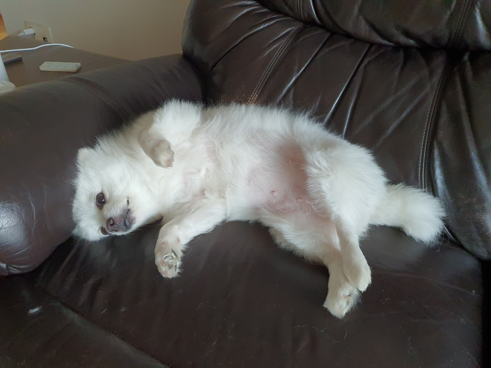

<body>
	<!-- sidebar starts -->
	<div class="sidebar">
		<fa-icon [icon]="['fas','gavel']" [style]="{}" class="topLogo" size="3x">
		</fa-icon>
		<div class="sidebarOption active">
			<span class="material-icons"> home </span>
			<h2>Home</h2>
		</div>
		<div class="sidebarOption">
			<span class="material-icons"> search </span>
			<h2>Explore</h2>
		</div>
		<div class="sidebarOption">
			<span class="material-icons"> notifications_none </span>
			<h2>Notifications</h2>
		</div>

		<div class="sidebarOption">
			<span class="material-icons"> mail_outline </span>
			<h2>Messages</h2>
		</div>

		<div class="sidebarOption">
			<span class="material-icons"> bookmark_border </span>
			<h2>Bookmarks</h2>
		</div>

		<div class="sidebarOption">
			<span class="material-icons"> list_alt </span>
			<h2>Lists</h2>
		</div>

		<div class="sidebarOption">
			<span class="material-icons"> perm_identity </span>
			<h2>Profile</h2>
		</div>

		<div class="sidebarOption">
			<span class="material-icons"> more_horiz </span>
			<h2>More</h2>
		</div>
		<button class="sidebar__tweet">New Post</button>
	</div>
	<!-- sidebar ends -->
	<!-- feed starts -->
	<div class="feed">
		<div class="feed__header">
			<h2>Home</h2>
		</div>

		<!-- tweetbox starts -->
		<div class="tweetBox">
			<form>
				<div class="tweetbox__input">
					
					<input type="text" placeholder="What's happening?" />
				</div>
				<button class="tweetBox__tweetButton">Post</button>
			</form>
		</div>
		<!-- tweetbox ends -->

		<!-- post starts -->
		<div class="post">
			<div class="post__avatar">
				
			</div>
			<div class="post__body">
				<div class="post__header">
					<div class="post__headerText">
						<h3>
							Jay<span class="post__headerSpecial"><span class="material-icons post__badge">
									verified </span>@somanathg</span>
						</h3>
					</div>
					<div class="post__headerDescription">
						<p>설이너무기여어</p>
					</div>
				</div>
				
				<div class="post__footer">
					<span class="material-icons"> favorite_border </span>
					<span class="material-icons"> notes </span>
					<span class="material-icons"> send </span>
				</div>
			</div>
		</div>
		<!-- post ends -->
	</div>
	<!-- feed ends -->
	<!-- widgets starts -->
	<div class="widgets">
		<div class="widgets__input">
			<span class="material-icons widgets__searchIcon"> search </span>
			<input type="text" placeholder="Enter keyword" />
		</div>

		<div class="widgets__widgetContainer">
			<h2>Trending</h2>
			<blockquote class="twitter-tweet">
				<p lang="en" dir="ltr">
					Angular gets better!
					<!--<a href="https://twitter.com/GrandTetonNPS?ref_src=twsrc%5Etfw">@GrandTetonNPS</a>.-->
					<!--<a href="https://twitter.com/hashtag/nature?src=hash&amp;ref_src=twsrc%5Etfw">#nature</a>-->
					<!--<a href="https://twitter.com/hashtag/sunset?src=hash&amp;ref_src=twsrc%5Etfw">#sunset</a>-->
					<!--<a href="http://t.co/YuKy2rcjyU">pic.twitter.com/YuKy2rcjyU</a>-->
				</p>
				&mdash; Google-Angular development team?
				<a href="https://twitter.com/Interior/status/463440424141459456?ref_src=twsrc%5Etfw">Aug 7, 2022</a>
			</blockquote>
			<script async src="https://platform.twitter.com/widgets.js" charset="utf-8"></script>
		</div>
	</div>
	<!-- widgets ends -->
</body>
